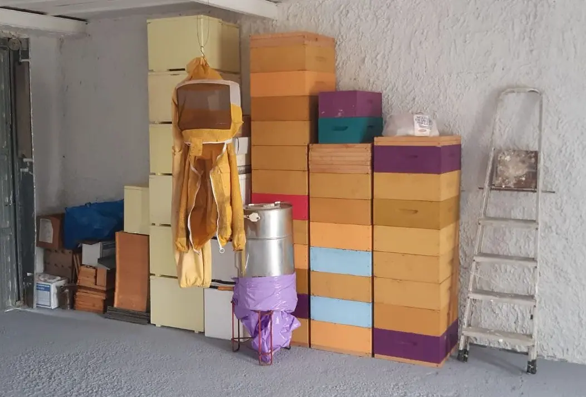
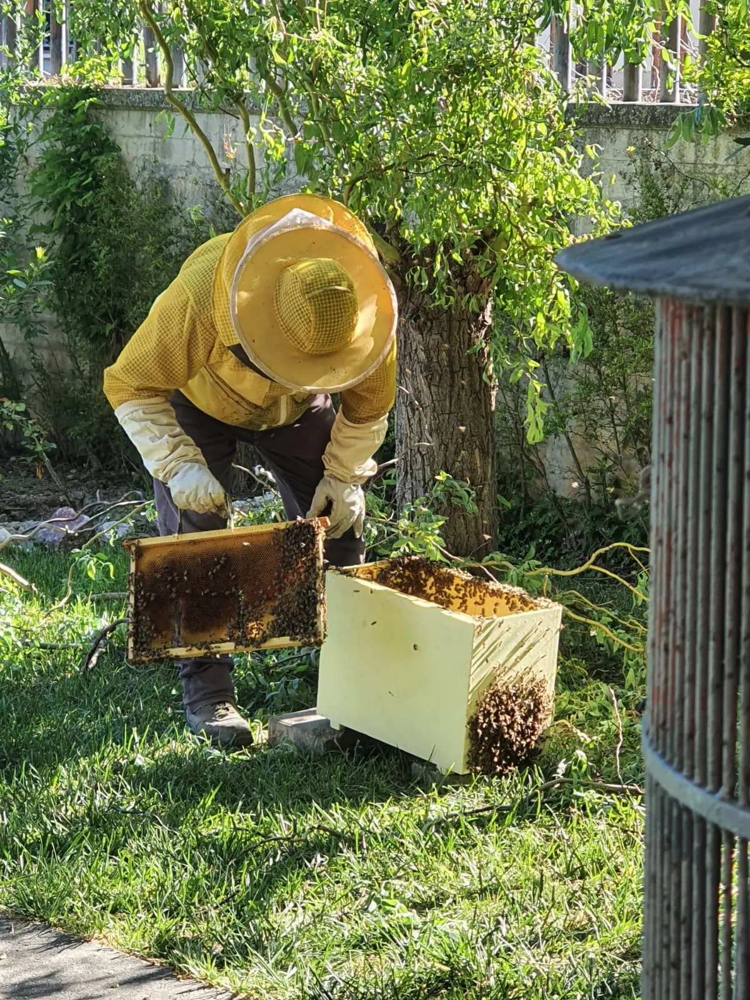

Chi siamo
Una passione nata in famiglia: è stato suo padre a insegnargli a conoscere le api. Dal timore alla scoperta.
Leggi la storiaNotaresco, Teramo · azienda apistica dal cuore artigianale
Questo è il quaderno di Gabriele Di Giuseppe, apicoltore. Dentro ci sono le sue api, i suoi tre mieli e il lavoro di un anno intero in apiario.
tre mieli, un solo apiario, tutto fatto a mano

Una passione nata in famiglia: è stato suo padre a insegnargli a conoscere le api. Dal timore alla scoperta.
Leggi la storia
Tre mieli in tre formati, il polline, le Piccole Delizie e le bomboniere fatte a mano.
Vedi i prodottiIl metodo, il calendario dell'apicoltore mese per mese, le foto e i video dall'apiario.
Entra in apiarioPremio Eccellenze di Casa Nostra 2023 e due medaglie d'oro al concorso "I mieli del territorio". I riconoscimenti
"Ottimo miele. Alta qualità! Persona seria e disponibile." Le recensioni
Uno sciame in giardino o su un muro? Lo recuperiamo senza fare del male alle api. Come funziona
Diventa custode di 60.000 amiche.il certificato di adozione
Con l'adozione sostieni un'apicoltura artigianale e la salute delle api del nostro territorio. In cambio ricevi il certificato con il tuo nome e il miele che la tua arnia ha prodotto. Tre pacchetti, da 50 € l'anno.

